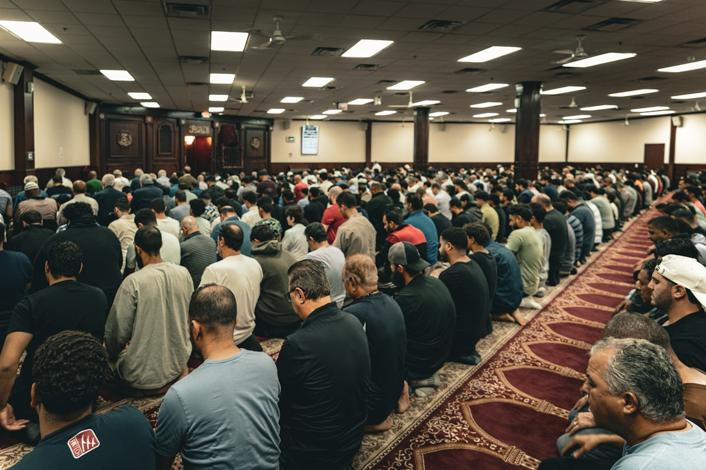

About Us
"And Hold fast, all together, by the rope which Allah (stretches out for you) and don't be divided among yourselves."Al-Qur'an 3:103
"Ye are the best of people, evolved for mankind, enjoining what is right, forbidding what is wrong, and believing in Allah."Al-Qur'an 3:110
✦
Who We Are
The Council of Nigerian Muslim Organizations (CNMO) understand and believe that:
- All sovereignty over the entire universe and whatever it contains belongs to Almighty Allah (SWT), and that Al-Islam is the true way of life given by Allah as He mentions in the Holy Qur'an, the final revelation sent for the guidance of mankind.
- All affairs relating to this Islamic Organization shall be organized and established following the guidance of the Holy Qur'an and the Sunnah (examples) of the Holy Prophet Mohammed (SAW).
- The establishment of this Islamic Organization is necessary for the propagation of the religion of Al-Islam as given to us by Allah (SWT). And therefore, we do hereby solemnly and voluntarily submit ourselves to Allah's will, and resolve to abide by the provisions of this Constitution.

Our Vision
This is the paramount reason for the existence of this organization, to promote peace and foster unity among Muslims and the community. To promote and propagate the cause of Islam and make conscious Muslims by teaching and educating member organizations and the community on Islamic ethics and values.
✦
Our Objectives
The Council of Nigerian Muslims Organisations is an umbrella organization, whose objectives are as follow:
- To serve as a central body for disseminating information within Nigerian Muslim communities and mediate between member organizations.
- To encourage inter-organizational relationships among member organizations.
- To promote peace and foster unity among member organizations.
- To provide educational, spiritual, social, and welfare services for all Muslims.
- To bridge the gap, both educational and spiritual, between member organizations and the community through the creation of a well-lubricated channel of communication to serve as a basis for effective interaction and exchange of ideas.
- To promote and propagate the cause of Islam and make conscious Muslims by teaching and educating member organization and the community on Islamic ethics and values.
- To assist the less privileged in the society irrespective of their religious beliefs, color, gender, or race and within the limits of the resources of the organization.
- To promote policies and programs that will encourage beneficial relationships amongst member organizations in particular, other Islamic organizations and humanity in general.
- To support all meaningful and legally accepted activities for the advancement of Islam in the UK and worldwide.
- To undertake other activities that are beneficial to humanity.